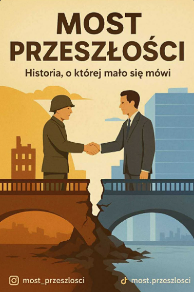
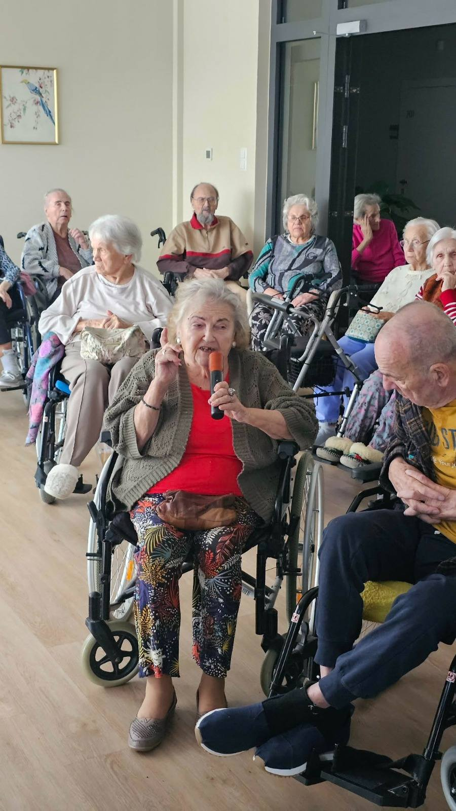
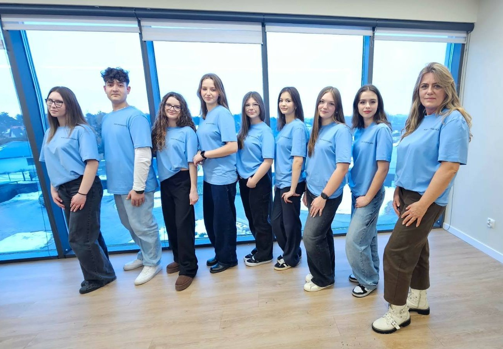
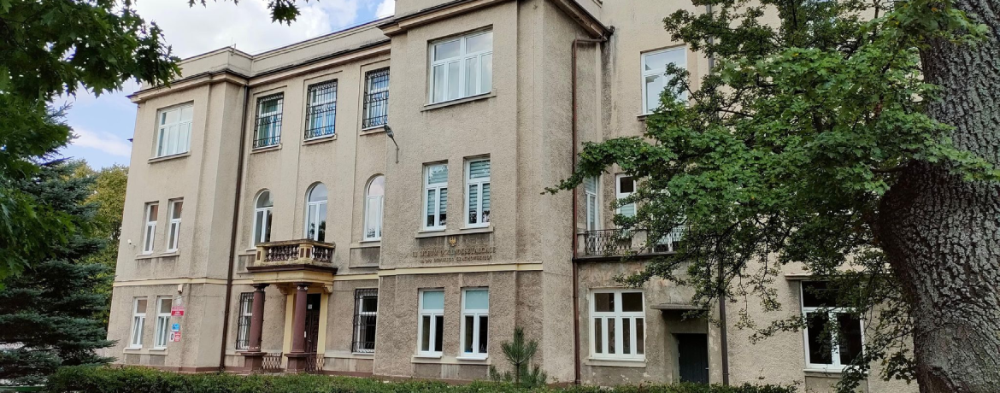
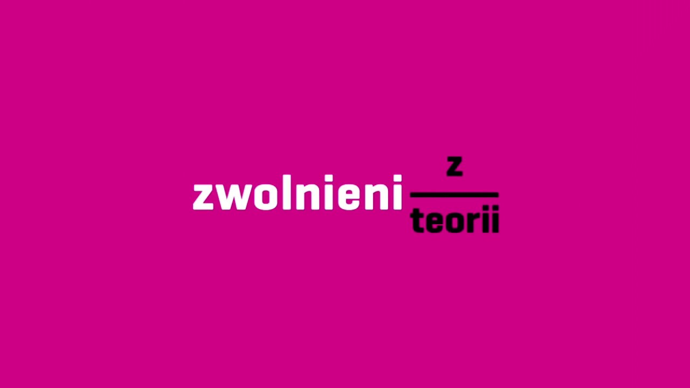

Most Przeszłości to inicjatywa łącząca ludzi, miejsca i historie w jedną wspólną opowieść.
To pierwszy krok w podróż przez zapomnianą historię, która jest tuż obok Ciebie! Chcemy zabrać Was w niezwykłą podróż po lokalnych miejscach, które zasługują na pamięć – choć dziś są już trochę zapomniane.


Nad realizacją inicjatywy czuwa kierownik zespołu Jakub Jarzyński, a opiekę merytoryczną sprawuje mgr Agnieszka Pętala. W skład zespołu wchodzą: Maja Kisiel, Magdalena Czubak, Anna Wilk, Zuzanna Szymańska, Oliwia Zawadzka, Michalina Jary oraz Martyna Mróz.


Zespół realizujący projekt Most Przeszłości reprezentuje III Liceum Ogólnokształcące im. Dionizego Czachowskiego w Radomiu.
„Most Przeszłości” to społeczno-edukacyjny projekt realizowany w ramach ogólnopolskiej olimpiady Zwolnieni z Teorii.
